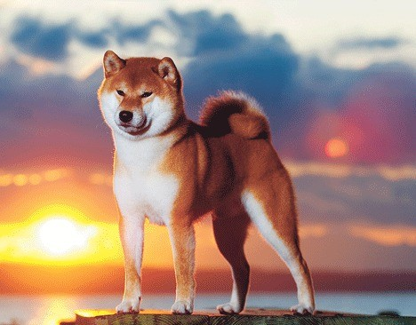

- Website: Celtic Star Kennels


- Email: info@celticstarkennels.com
- Phone: (+44) 07535717837
- Location: Llandybie, United Kingdom


An ancient Japanese breed, the Shiba Inu is a little but well-muscled dog once employed as a hunter. Today, the spirited, good-natured Shiba is the most popular companion dog in Japan. The adaptable Shiba is at home in town or country. Brought to America from Japan as recently as 60 years ago, Shibas are growing in popularity in the West and are already the most popular breed in their homeland. Their white markings combined with their coloring (red, red sesame, or black and tan) and their alert expression and smooth stride makes them almost foxlike. They're sturdy, muscular dogs with a bold, confident personality to match.
The Shiba Inu dog breed was originally bred to flush birds and small game, and was occasionally used to hunt wild boar. They’re one of Japan’s six native breeds: Akita (large), Kishu, Hokkaido, Kai, Shikoku (medium), and Shiba (small).
Shiba inu behaviour examples
Bathing
Losing weight
Becoming a cat
Useful resources
TOP-5 UK shiba inu kennels
-
-
- Email: shibastone@icloud.com
- Phone: (+44) 7983 408712
- Location: Nottinghamshire, United Kingdom
- Email: shibastone@icloud.com
-
- Website: Jiltrain
- Email: jiltrain@yahoo.co.uk
- Phone: (+44) 01773 279982
- Location: Derbyshire, United Kingdom
-
- Website: Arctic Wolf
- Email: sheilaandrob@yahoo.co.uk
- Phone: (+44) 01352 771862 or (+44) 07971934014
- Location: Wrexham, North Wales, United Kingdom
-
- Website: Fantasa Team Vormund
- Email: lizdunhill@aol.com or michaelladunhillhall@aol.co.uk
- Phone: (+44) 01909 486628
- Location: Worksop, Nottinghamshire, United Kingdom
- Website: Fantasa Team Vormund